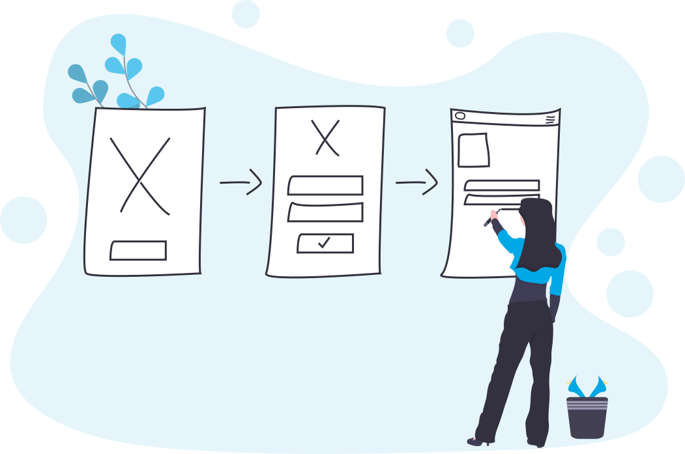

Who is welcome?
Everyone is welcome in the community (yes, even lefties) as long as they are constructive and
polite.
That said, we specifically cater for...
Programmers
Develop software that helps make politics more effective

Designers
Design tools, processes, apps, and websites that make Britain work better
Makers
Do something else and want to get stuck in? Join the community!